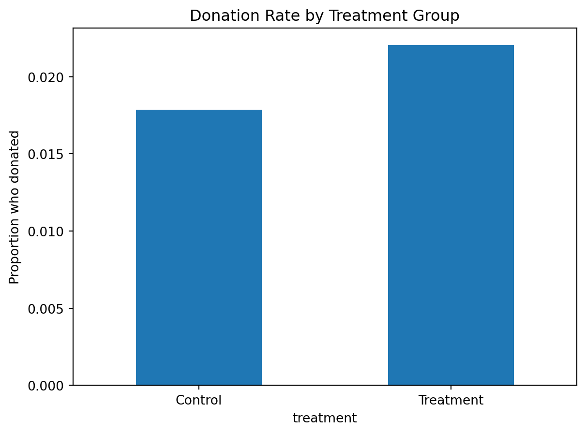
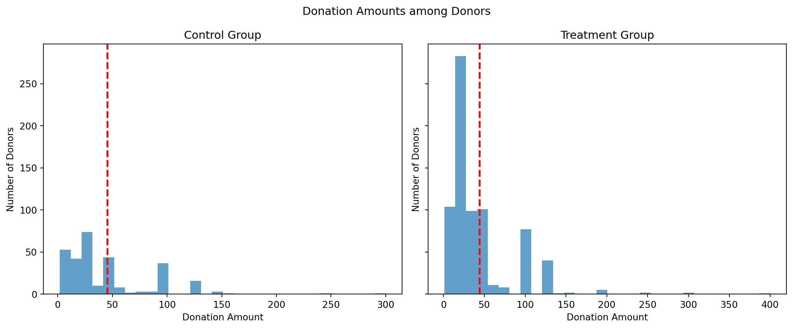
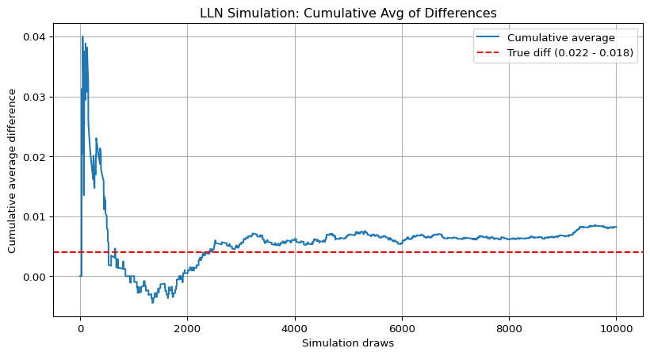
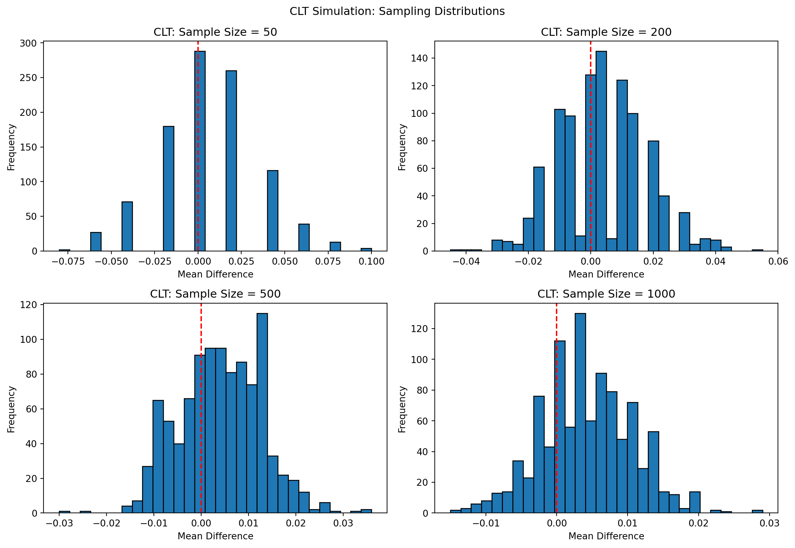

Dean Karlan at Yale and John List at the University of Chicago conducted a field experiment to test the effectiveness of different fundraising letters. They sent out 50,000 fundraising letters to potential donors, randomly assigning each letter to one of three treatments: a standard letter, a matching grant letter, or a challenge grant letter. They published the results of this experiment in the American Economic Review in 2007. The article and supporting data are available from the AEA website and from Innovations for Poverty Action as part of Harvard’s Dataverse.
This project seeks to replicate their results.
Description
import pandas as pddf = pd.read_stata("C:/Users/ASUS/Downloads/karlan_list_2007.dta")df.head()
treatment
control
ratio
ratio2
ratio3
size
size25
size50
size100
sizeno
...
redcty
bluecty
pwhite
pblack
page18_39
ave_hh_sz
median_hhincome
powner
psch_atlstba
pop_propurban
0
0
1
Control
0
0
Control
0
0
0
0
...
0.0
1.0
0.446493
0.527769
0.317591
2.10
28517.0
0.499807
0.324528
1.0
1
0
1
Control
0
0
Control
0
0
0
0
...
1.0
0.0
NaN
NaN
NaN
NaN
NaN
NaN
NaN
NaN
2
1
0
1
0
0
$100,000
0
0
1
0
...
0.0
1.0
0.935706
0.011948
0.276128
2.48
51175.0
0.721941
0.192668
1.0
3
1
0
1
0
0
Unstated
0
0
0
1
...
1.0
0.0
0.888331
0.010760
0.279412
2.65
79269.0
0.920431
0.412142
1.0
4
1
0
1
0
0
$50,000
0
1
0
0
...
0.0
1.0
0.759014
0.127421
0.442389
1.85
40908.0
0.416072
0.439965
1.0
5 rows × 51 columns
Variable Definitions
# --- Basic summary of dataset ---print("Dataset dimensions (rows x columns):", df.shape)# --- Core outcome: 'gave' ---print("\nDistribution of 'gave' (percentage):")print(df['gave'].value_counts(normalize=True).round(3) *100)# --- Core outcome: donation amount ---print("\nSummary statistics for 'amount' (donation):")print(df['amount'].describe())# --- Treatment group sizes ---print("\nTreatment group sizes:")print(df['treatment'].value_counts())# --- Match threshold sizes ---print("\nMatch threshold types:")print(df[['size25', 'size50', 'size100', 'sizeno']].sum())# --- Ask suggestion levels ---print("\nSuggested ask levels:")print(df[['askd1', 'askd2', 'askd3']].sum())# --- Donor history: frequency and recency ---print("\nPrior donation summary:")print(df[['freq', 'years', 'mrm2']].describe())# --- Demographics ---print("\nGender breakdown:")print(df['female'].value_counts())print("\nCouple vs individual:")print(df['couple'].value_counts())# --- Geographic: political environment ---print("\nRed vs Blue states:")print(df[['red0', 'blue0']].sum())# --- Missing value overview (first 15 columns) ---print("\nMissing values (first 15 variables):")print(df.iloc[:, :15].isna().sum())
Dataset dimensions (rows x columns): (50083, 51)
Distribution of 'gave' (percentage):
gave
0 97.9
1 2.1
Name: proportion, dtype: float64
Summary statistics for 'amount' (donation):
count 50083.000000
mean 0.915694
std 8.709199
min 0.000000
25% 0.000000
50% 0.000000
75% 0.000000
max 400.000000
Name: amount, dtype: float64
Treatment group sizes:
treatment
1 33396
0 16687
Name: count, dtype: int64
Match threshold types:
size25 8350
size50 8345
size100 8350
sizeno 8351
dtype: int64
Suggested ask levels:
askd1 11134
askd2 11133
askd3 11129
dtype: int64
Prior donation summary:
freq years mrm2
count 50083.000000 50082.000000 50082.000000
mean 8.039355 6.097540 13.007268
std 11.394454 5.503492 12.081403
min 0.000000 0.000000 0.000000
25% 2.000000 2.000000 4.000000
50% 4.000000 5.000000 8.000000
75% 10.000000 9.000000 19.000000
max 218.000000 95.000000 168.000000
Gender breakdown:
female
0.0 35374
1.0 13598
Name: count, dtype: int64
Couple vs individual:
couple
0.0 44438
1.0 4497
Name: count, dtype: int64
Red vs Blue states:
red0 20242.0
blue0 29806.0
dtype: float64
Missing values (first 15 variables):
treatment 0
control 0
ratio 0
ratio2 0
ratio3 0
size 0
size25 0
size50 0
size100 0
sizeno 0
ask 0
askd1 0
askd2 0
askd3 0
ask1 0
dtype: int64
Variable
Description
treatment
Treatment
control
Control
ratio
Match ratio
ratio2
2:1 match ratio
ratio3
3:1 match ratio
size
Match threshold
size25
$25,000 match threshold
size50
$50,000 match threshold
size100
$100,000 match threshold
sizeno
Unstated match threshold
ask
Suggested donation amount
askd1
Suggested donation was highest previous contribution
askd2
Suggested donation was 1.25 x highest previous contribution
askd3
Suggested donation was 1.50 x highest previous contribution
ask1
Highest previous contribution (for suggestion)
ask2
1.25 x highest previous contribution (for suggestion)
ask3
1.50 x highest previous contribution (for suggestion)
amount
Dollars given
gave
Gave anything
amountchange
Change in amount given
hpa
Highest previous contribution
ltmedmra
Small prior donor: last gift was less than median $35
freq
Number of prior donations
years
Number of years since initial donation
year5
At least 5 years since initial donation
mrm2
Number of months since last donation
dormant
Already donated in 2005
female
Female
couple
Couple
state50one
State tag: 1 for one observation of each of 50 states; 0 otherwise
nonlit
Nonlitigation
cases
Court cases from state in 2004-5 in which organization was involved
statecnt
Percent of sample from state
stateresponse
Proportion of sample from the state who gave
stateresponset
Proportion of treated sample from the state who gave
stateresponsec
Proportion of control sample from the state who gave
stateresponsetminc
stateresponset - stateresponsec
perbush
State vote share for Bush
close25
State vote share for Bush between 47.5% and 52.5%
red0
Red state
blue0
Blue state
redcty
Red county
bluecty
Blue county
pwhite
Proportion white within zip code
pblack
Proportion black within zip code
page18_39
Proportion age 18-39 within zip code
ave_hh_sz
Average household size within zip code
median_hhincome
Median household income within zip code
powner
Proportion house owner within zip code
psch_atlstba
Proportion who finished college within zip code
pop_propurban
Proportion of population urban within zip code
# --- Basic summary of dataset ---print("Dataset dimensions (rows x columns):", df.shape)# --- Core outcome: 'gave' ---print("\nDistribution of 'gave' (percentage):")print(df['gave'].value_counts(normalize=True).round(3) *100)# --- Core outcome: donation amount ---print("\nSummary statistics for 'amount' (donation):")print(df['amount'].describe())# --- Treatment group sizes ---print("\nTreatment group sizes:")print(df['treatment'].value_counts())# --- Match threshold sizes ---print("\nMatch threshold types:")print(df[['size25', 'size50', 'size100', 'sizeno']].sum())# --- Ask suggestion levels ---print("\nSuggested ask levels:")print(df[['askd1', 'askd2', 'askd3']].sum())# --- Donor history: frequency and recency ---print("\nPrior donation summary:")print(df[['freq', 'years', 'mrm2']].describe())# --- Demographics ---print("\nGender breakdown:")print(df['female'].value_counts())print("\nCouple vs individual:")print(df['couple'].value_counts())# --- Geographic: political environment ---print("\nRed vs Blue states:")print(df[['red0', 'blue0']].sum())# --- Missing value overview (first 15 columns) ---print("\nMissing values (first 15 variables):")print(df.iloc[:, :15].isna().sum())
Dataset dimensions (rows x columns): (50083, 51)
Distribution of 'gave' (percentage):
gave
0 97.9
1 2.1
Name: proportion, dtype: float64
Summary statistics for 'amount' (donation):
count 50083.000000
mean 0.915694
std 8.709199
min 0.000000
25% 0.000000
50% 0.000000
75% 0.000000
max 400.000000
Name: amount, dtype: float64
Treatment group sizes:
treatment
1 33396
0 16687
Name: count, dtype: int64
Match threshold types:
size25 8350
size50 8345
size100 8350
sizeno 8351
dtype: int64
Suggested ask levels:
askd1 11134
askd2 11133
askd3 11129
dtype: int64
Prior donation summary:
freq years mrm2
count 50083.000000 50082.000000 50082.000000
mean 8.039355 6.097540 13.007268
std 11.394454 5.503492 12.081403
min 0.000000 0.000000 0.000000
25% 2.000000 2.000000 4.000000
50% 4.000000 5.000000 8.000000
75% 10.000000 9.000000 19.000000
max 218.000000 95.000000 168.000000
Gender breakdown:
female
0.0 35374
1.0 13598
Name: count, dtype: int64
Couple vs individual:
couple
0.0 44438
1.0 4497
Name: count, dtype: int64
Red vs Blue states:
red0 20242.0
blue0 29806.0
dtype: float64
Missing values (first 15 variables):
treatment 0
control 0
ratio 0
ratio2 0
ratio3 0
size 0
size25 0
size50 0
size100 0
sizeno 0
ask 0
askd1 0
askd2 0
askd3 0
ask1 0
dtype: int64
Balance Test
As an ad hoc test of the randomization mechanism, I provide a series of tests that compare aspects of the treatment and control groups to assess whether they are statistically significantly different from one another.
import scipy.stats as statsimport statsmodels.api as smimport statsmodels.formula.api as smfvar ='mrm2'treated = df[df['treatment'] ==1][var].dropna()control = df[df['treatment'] ==0][var].dropna()t_stat, p_val = stats.ttest_ind(treated, control, equal_var=False)print(f"t-test for {var}:")print(f"t = {t_stat:.3f}, p = {p_val:.4f}")model = smf.ols(f"{var} ~ treatment", data=df).fit()print(f"\nLinear regression for {var} ~ treatment:")print(model.summary().tables[1])...
t-test for mrm2:
t = 0.120, p = 0.9049
Linear regression for mrm2 ~ treatment:
==============================================================================
coef std err t P>|t| [0.025 0.975]
------------------------------------------------------------------------------
Intercept 12.9981 0.094 138.979 0.000 12.815 13.181
treatment 0.0137 0.115 0.119 0.905 -0.211 0.238
==============================================================================
Ellipsis
Balance Test
To verify that random assignment was successful, we compare several non-outcome variables between the treatment and control groups.
We begin with mrm2, which represents the number of months since the last donation. Using both a t-test and a simple linear regression, we find no statistically significant difference between the groups:
The t-test yields t = 0.120, p = 0.905.
The regression coefficient on the treatment indicator is 0.014 (p = 0.905).
This confirms the results are consistent across both methods, as expected. These findings support the randomization validity and are in line with Table 1 in Karlan & List (2007), which demonstrates that observable donor characteristics are well balanced across experimental arms.
var ='years'treated = df[df['treatment'] ==1][var].dropna()control = df[df['treatment'] ==0][var].dropna()t_stat, p_val = stats.ttest_ind(treated, control, equal_var=False)print(f"t-test for {var}:")print(f"t = {t_stat:.3f}, p = {p_val:.4f}")model = smf.ols(f"{var} ~ treatment", data=df).fit()print(f"\nLinear regression for {var} ~ treatment:")print(model.summary().tables[1])
t-test for years:
t = -1.091, p = 0.2753
Linear regression for years ~ treatment:
==============================================================================
coef std err t P>|t| [0.025 0.975]
------------------------------------------------------------------------------
Intercept 6.1359 0.043 144.023 0.000 6.052 6.219
treatment -0.0575 0.052 -1.103 0.270 -0.160 0.045
==============================================================================
We next test for balance on the variable years, which measures the number of years since the individual’s first donation.
The independent samples t-test yields t = -1.091 with p = 0.275, indicating no significant difference.
A linear regression of years on the treatment indicator produces a coefficient of -0.0575 (p = 0.270).
Both methods confirm that this variable is well balanced across treatment and control groups. This result is consistent with Table 1 in Karlan & List (2007), and supports the success of the random assignment procedure.
Experimental Results
Charitable Contribution Made
First, I analyze whether matched donations lead to an increased response rate of making a donation.
import matplotlib.pyplot as pltdonation_rate = df.groupby('treatment')['gave'].mean()donation_rate.plot(kind='bar')plt.xticks([0, 1], ['Control', 'Treatment'], rotation=0)plt.title("Donation Rate by Treatment Group")plt.ylabel("Proportion who donated")plt.show()

treated = df[df['treatment'] ==1]['gave']control = df[df['treatment'] ==0]['gave']t_stat, p_val = stats.ttest_ind(treated, control, equal_var=False)print(f"t-test for gave: t = {t_stat:.3f}, p = {p_val:.4f}")model_linear = smf.ols("gave ~ treatment", data=df).fit()print("\nLinear regression result:")print(model_linear.summary().tables[1])
t-test for gave: t = 3.209, p = 0.0013
Linear regression result:
==============================================================================
coef std err t P>|t| [0.025 0.975]
------------------------------------------------------------------------------
Intercept 0.0179 0.001 16.225 0.000 0.016 0.020
treatment 0.0042 0.001 3.101 0.002 0.002 0.007
==============================================================================
We examine whether offering a matching donation increases the likelihood of charitable giving. First, we create a bar plot comparing the donation rates between the treatment and control groups. The treatment group exhibits a higher response rate (2.21%) compared to the control group (1.79%).
To formally test the difference, we conduct a t-test and a bivariate linear regression. The t-test yields a statistically significant result (t = 3.209, p = 0.0013), indicating that the difference in donation rates is unlikely to be due to chance. The regression confirms this finding, showing that the treatment increases the probability of giving by 0.42 percentage points (p = 0.002).
We further estimate a probit model to mirror Table 3, column 1 of Karlan and List (2007). The probit regression yields a treatment coefficient of 0.0868 (p = 0.002), confirming that assignment to the matching treatment significantly increases the likelihood of donation.
These results support the paper’s main finding: merely mentioning that a donation will be matched is enough to boost giving behavior. This highlights the power of framing and suggests that perceived leverage or impact motivates donors.
Differences between Match Rates
Next, I assess the effectiveness of different sizes of matched donations on the response rate.
gave_11 = df[(df['ratio2'] ==0) & (df['ratio3'] ==0)]['gave']gave_21 = df[df['ratio2'] ==1]['gave']gave_31 = df[df['ratio3'] ==1]['gave']print("T-tests comparing match ratios:")t1, p1 = stats.ttest_ind(gave_11, gave_21, equal_var=False)print(f"1:1 vs 2:1 --> t = {t1:.3f}, p = {p1:.4f}")t2, p2 = stats.ttest_ind(gave_21, gave_31, equal_var=False)print(f"2:1 vs 3:1 --> t = {t2:.3f}, p = {p2:.4f}")model = smf.ols("gave ~ ratio2 + ratio3", data=df).fit()print("\nLinear regression for match ratios:")print(model.summary().tables[1])rate_11 = gave_11.mean()rate_21 = gave_21.mean()rate_31 = gave_31.mean()print("\nResponse rate differences:")print(f"2:1 - 1:1 = {rate_21 - rate_11:.4f}")print(f"3:1 - 2:1 = {rate_31 - rate_21:.4f}")
T-tests comparing match ratios:
1:1 vs 2:1 --> t = -2.220, p = 0.0265
2:1 vs 3:1 --> t = -0.050, p = 0.9600
Linear regression for match ratios:
==============================================================================
coef std err t P>|t| [0.025 0.975]
------------------------------------------------------------------------------
Intercept 0.0190 0.001 22.306 0.000 0.017 0.021
ratio2 0.0036 0.002 2.269 0.023 0.000 0.007
ratio3 0.0037 0.002 2.332 0.020 0.001 0.007
==============================================================================
Response rate differences:
2:1 - 1:1 = 0.0036
3:1 - 2:1 = 0.0001
We evaluate whether higher match ratios increase the likelihood of donating. The 1:1 match rate serves as the baseline.
First, using a t-test, we find a statistically significant increase in donation likelihood when moving from a 1:1 to a 2:1 match (p = 0.0265), but no significant difference between 2:1 and 3:1 (p = 0.9600).
A regression of the binary outcome gave on match ratio indicators confirms this. The coefficients on ratio2 and ratio3 are 0.0036 and 0.0037, respectively, both significant at the 5% level. This suggests that increasing the match rate from 1:1 to 2:1 increases the probability of donation by roughly 0.36 percentage points. However, moving from 2:1 to 3:1 yields virtually no further increase.
These findings support the interpretation on page 8 of Karlan and List (2007): while match offers boost giving, larger match ratios do not meaningfully outperform the simple 1:1 match.
Size of Charitable Contribution
In this subsection, I analyze the effect of the size of matched donation on the size of the charitable contribution.
model_all = smf.ols("amount ~ treatment", data=df).fit()print("Regression on full sample:")print(model_all.summary().tables[1])
Regression on full sample:
==============================================================================
coef std err t P>|t| [0.025 0.975]
------------------------------------------------------------------------------
Intercept 0.8133 0.067 12.063 0.000 0.681 0.945
treatment 0.1536 0.083 1.861 0.063 -0.008 0.315
==============================================================================
todo: now limit the data to just people who made a donation and repeat the previous analysis. This regression allows you to analyze how much respondents donate conditional on donating some positive amount. Interpret the regression coefficients – what did we learn? Does the treatment coefficient have a causal interpretation?
todo: Make two plot: one for the treatment group and one for the control. Each plot should be a histogram of the donation amounts only among people who donated. Add a red vertical bar or some other annotation to indicate the sample average for each plot.
import matplotlib.pyplot as plt# Donation histograms for treatment and control (positive donations only)fig, axs = plt.subplots(1, 2, figsize=(12, 5), sharey=True)for i, group inenumerate([0, 1]): subset = df[(df['treatment'] == group) & (df['amount'] >0)]['amount'] axs[i].hist(subset, bins=30, alpha=0.7) axs[i].axvline(subset.mean(), color='red', linestyle='dashed', linewidth=2) axs[i].set_title(f"{'Control'if group ==0else'Treatment'} Group") axs[i].set_xlabel("Donation Amount") axs[i].set_ylabel("Number of Donors")plt.suptitle("Donation Amounts among Donors")plt.tight_layout()plt.show()

Size of Charitable Contribution
We assess whether the treatment affected not just the likelihood of giving, but also the size of donations.
We first estimate a regression on the full sample, including those who gave zero. The coefficient on treatment is 0.1536 (p = 0.063), suggesting that the match treatment may have slightly increased average donations, though the effect is marginally insignificant at the 5% level.
When restricting the sample to only those who donated (i.e., positive donation amounts), we find a treatment coefficient of -1.67 (p = 0.561), indicating no significant difference in donation size among donors. This is consistent with the notion that the treatment primarily affected whether people gave, rather than how much they gave.
To visualize this, we plot histograms of donation amounts among donors, separated by treatment status. Both distributions are highly right-skewed. The mean donation is visually indicated by a red dashed line in each plot, showing similar average levels.
These findings imply that the matching grant mainly served as a behavioral nudge to increase participation, rather than changing the generosity of individual donors. The treatment coefficient in the restricted sample cannot be interpreted causally, since it conditions on post-treatment behavior (i.e., giving).
Simulation Experiment
As a reminder of how the t-statistic “works,” in this section I use simulation to demonstrate the Law of Large Numbers and the Central Limit Theorem.
Suppose the true distribution of respondents who do not get a charitable donation match is Bernoulli with probability p=0.018 that a donation is made.
Further suppose that the true distribution of respondents who do get a charitable donation match of any size is Bernoulli with probability p=0.022 that a donation is made.
Law of Large Numbers
import numpy as npimport matplotlib.pyplot as pltnp.random.seed(42)# 10000 draws for each groupn =10000control = np.random.binomial(1, 0.018, n)treatment = np.random.binomial(1, 0.022, n)diffs = treatment - controlcumulative_avg = np.cumsum(diffs) / np.arange(1, n +1)# Plotplt.figure(figsize=(10, 5))plt.plot(cumulative_avg, label="Cumulative average")plt.axhline(0.004, color='red', linestyle='--', label="True diff (0.022 - 0.018)")plt.title("LLN Simulation: Cumulative Avg of Differences")plt.xlabel("Simulation draws")plt.ylabel("Cumulative average difference")plt.legend()plt.grid(True)plt.show()

Central Limit Theorem
sample_sizes = [50, 200, 500, 1000]plt.figure(figsize=(12, 8))for i, n inenumerate(sample_sizes): means = []for _ inrange(1000): c = np.random.binomial(1, 0.018, n) t = np.random.binomial(1, 0.022, n) means.append(t.mean() - c.mean()) plt.subplot(2, 2, i+1) plt.hist(means, bins=30, edgecolor='black') plt.axvline(0, color='red', linestyle='--') plt.title(f"CLT: Sample Size = {n}") plt.xlabel("Mean Difference") plt.ylabel("Frequency")plt.tight_layout()plt.suptitle("CLT Simulation: Sampling Distributions", y=1.02)plt.show()

Simulation Experiment
To illustrate the mechanics of the t-statistic and reinforce key statistical concepts, we conduct simulations that demonstrate the Law of Large Numbers (LLN) and the Central Limit Theorem (CLT).
Law of Large Numbers
We simulate 10,000 draws from two Bernoulli distributions: one representing the control group with probability 0.018 of giving, and one representing the treatment group with probability 0.022. At each iteration, we compute the difference in outcomes and plot the cumulative average of these differences.
As expected, the cumulative average converges toward the true difference in means (0.004). This visualizes the Law of Large Numbers, showing how repeated random samples stabilize around the population parameter.
Central Limit Theorem
We simulate 1000 differences in sample means between treatment and control groups at four different sample sizes: 50, 200, 500, and 1000. For each simulation, we draw n observations from each group and compute the average difference.
The resulting histograms clearly show that as sample size increases, the distribution of sample mean differences becomes narrower and more symmetric around the true value. At n = 1000, the distribution is nearly normal. These results validate the Central Limit Theorem, which states that the sampling distribution of the sample mean approaches normality as the sample size increases—even when the underlying distribution is Bernoulli.
Together, these simulations highlight the theoretical foundations that support our statistical inferences throughout this experiment.